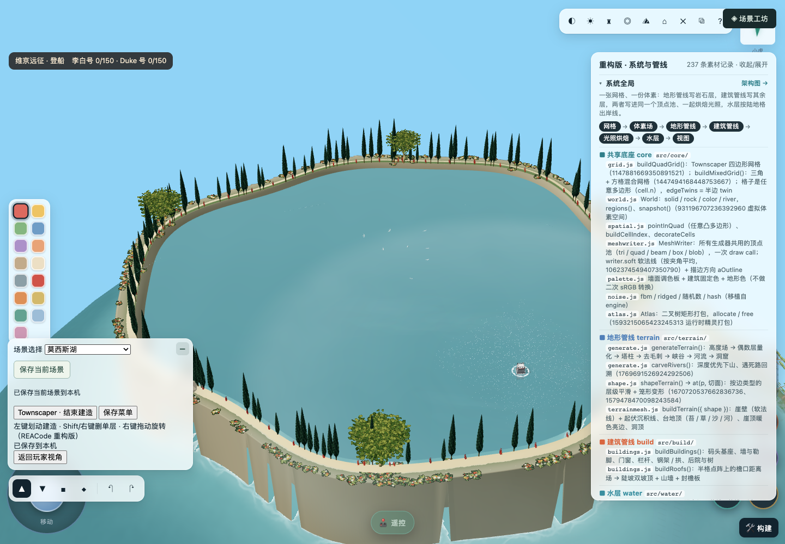
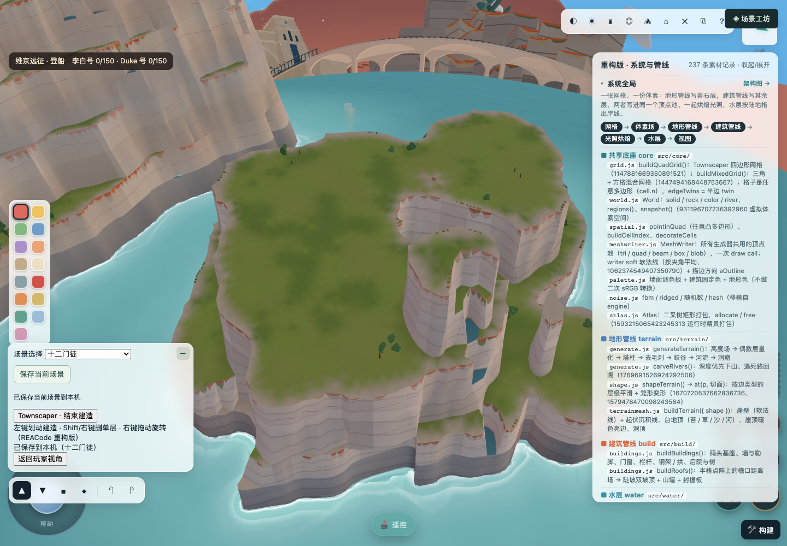
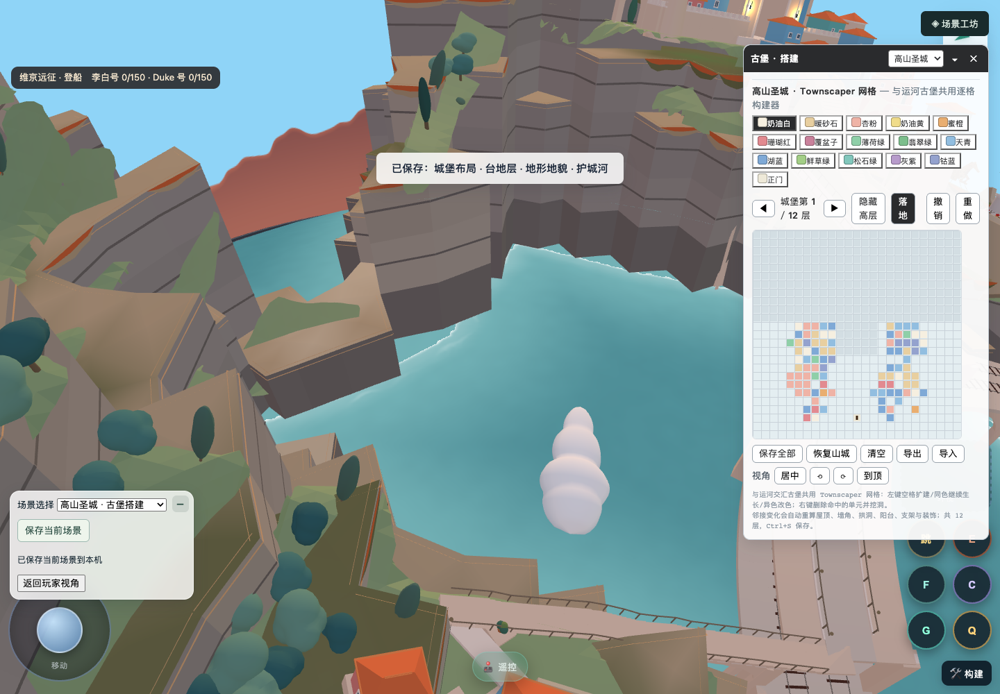
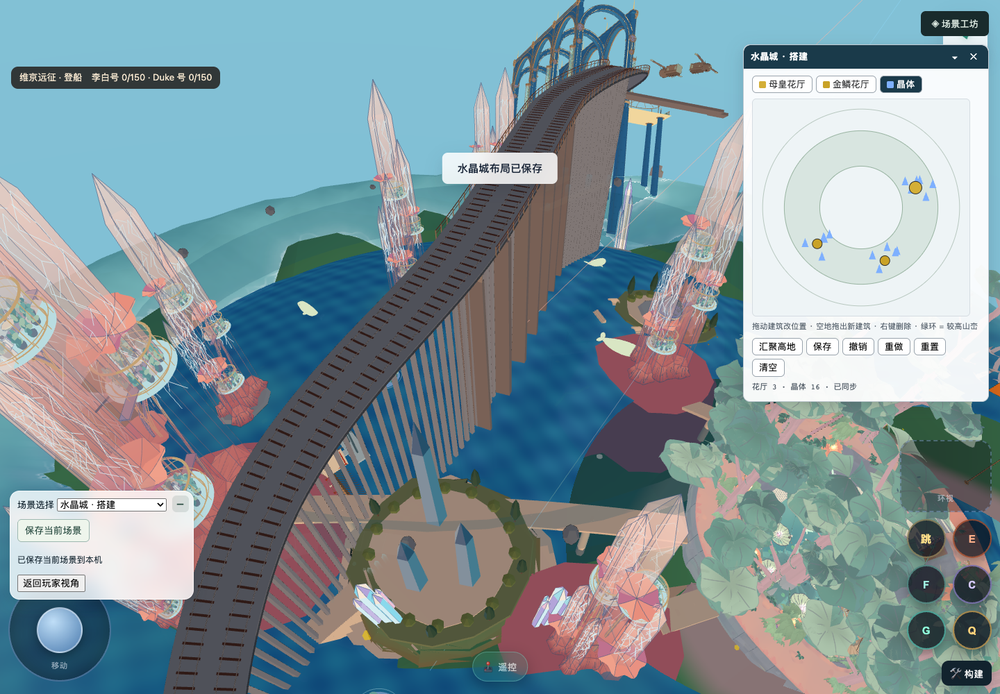

路径：右下编辑 → 构建 → 左下场景选择。莫西斯湖/十二门徒使用场景体素鼠标编辑；高山圣城和水晶城使用其既有现场编辑面板。统一“保存当前场景”调用所选场景自己的存储接口，并保留原面板保存按钮。
真实默认主游戏、隔离浏览器：五项场景入口和保存通过，莫西斯湖实际鼠标改变体素，保存后整页刷新仍保留；不是用程序修改API冒充鼠标。其余场景本批验证入口、镜头归属和保存，未重跑其全部编辑操作矩阵。关闭编辑释放编辑镜头。




完整实际浏览器回执。pageerrors=[]；统一五组20261113T233011541067Z PASS（UTC，上海日期2026-11-14）。存储错误返回失败，不冒称原生多键保存具事务性。无用户浏览器存档改写。